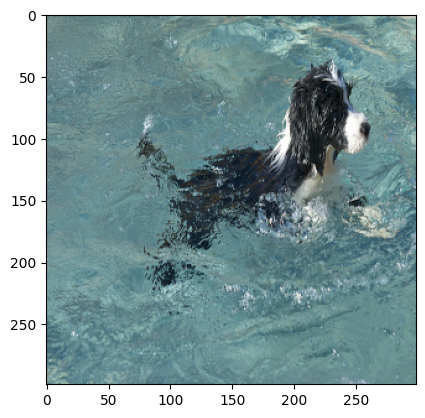
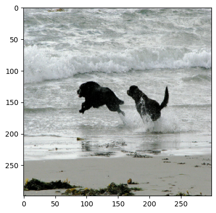
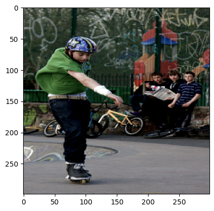

Image Captioning
Author: A_K_Nain
Date created: 2021/05/29
Last modified: 2021/10/31
Description: Implement an image captioning model using a CNN and a Transformer.

Setup
import os
os.environ["KERAS_BACKEND"] = "tensorflow"
import re
import numpy as np
import matplotlib.pyplot as plt
import tensorflow as tf
import keras
from keras import layers
from keras.applications import efficientnet
from keras.layers import TextVectorization
keras.utils.set_random_seed(111)
Download the dataset
We will be using the Flickr8K dataset for this tutorial. This dataset comprises over 8,000 images, that are each paired with five different captions.
!wget -q https://github.com/jbrownlee/Datasets/releases/download/Flickr8k/Flickr8k_Dataset.zip
!wget -q https://github.com/jbrownlee/Datasets/releases/download/Flickr8k/Flickr8k_text.zip
!unzip -qq Flickr8k_Dataset.zip
!unzip -qq Flickr8k_text.zip
!rm Flickr8k_Dataset.zip Flickr8k_text.zip
# Path to the images
IMAGES_PATH = "Flicker8k_Dataset"
# Desired image dimensions
IMAGE_SIZE = (299, 299)
# Vocabulary size
VOCAB_SIZE = 10000
# Fixed length allowed for any sequence
SEQ_LENGTH = 25
# Dimension for the image embeddings and token embeddings
EMBED_DIM = 512
# Per-layer units in the feed-forward network
FF_DIM = 512
# Other training parameters
BATCH_SIZE = 64
EPOCHS = 30
AUTOTUNE = tf.data.AUTOTUNE
Preparing the dataset
def load_captions_data(filename):
"""Loads captions (text) data and maps them to corresponding images.
Args:
filename: Path to the text file containing caption data.
Returns:
caption_mapping: Dictionary mapping image names and the corresponding captions
text_data: List containing all the available captions
"""
with open(filename) as caption_file:
caption_data = caption_file.readlines()
caption_mapping = {}
text_data = []
images_to_skip = set()
for line in caption_data:
line = line.rstrip("\n")
# Image name and captions are separated using a tab
img_name, caption = line.split("\t")
# Each image is repeated five times for the five different captions.
# Each image name has a suffix `#(caption_number)`
img_name = img_name.split("#")[0]
img_name = os.path.join(IMAGES_PATH, img_name.strip())
# We will remove caption that are either too short to too long
tokens = caption.strip().split()
if len(tokens) < 5 or len(tokens) > SEQ_LENGTH:
images_to_skip.add(img_name)
continue
if img_name.endswith("jpg") and img_name not in images_to_skip:
# We will add a start and an end token to each caption
caption = "<start> " + caption.strip() + " <end>"
text_data.append(caption)
if img_name in caption_mapping:
caption_mapping[img_name].append(caption)
else:
caption_mapping[img_name] = [caption]
for img_name in images_to_skip:
if img_name in caption_mapping:
del caption_mapping[img_name]
return caption_mapping, text_data
def train_val_split(caption_data, train_size=0.8, shuffle=True):
"""Split the captioning dataset into train and validation sets.
Args:
caption_data (dict): Dictionary containing the mapped caption data
train_size (float): Fraction of all the full dataset to use as training data
shuffle (bool): Whether to shuffle the dataset before splitting
Returns:
Traning and validation datasets as two separated dicts
"""
# 1. Get the list of all image names
all_images = list(caption_data.keys())
# 2. Shuffle if necessary
if shuffle:
np.random.shuffle(all_images)
# 3. Split into training and validation sets
train_size = int(len(caption_data) * train_size)
training_data = {
img_name: caption_data[img_name] for img_name in all_images[:train_size]
}
validation_data = {
img_name: caption_data[img_name] for img_name in all_images[train_size:]
}
# 4. Return the splits
return training_data, validation_data
# Load the dataset
captions_mapping, text_data = load_captions_data("Flickr8k.token.txt")
# Split the dataset into training and validation sets
train_data, valid_data = train_val_split(captions_mapping)
print("Number of training samples: ", len(train_data))
print("Number of validation samples: ", len(valid_data))
Number of training samples: 6114
Number of validation samples: 1529
Vectorizing the text data
We'll use the TextVectorization layer to vectorize the text data,
that is to say, to turn the
original strings into integer sequences where each integer represents the index of
a word in a vocabulary. We will use a custom string standardization scheme
(strip punctuation characters except < and >) and the default
splitting scheme (split on whitespace).
def custom_standardization(input_string):
lowercase = tf.strings.lower(input_string)
return tf.strings.regex_replace(lowercase, "[%s]" % re.escape(strip_chars), "")
strip_chars = "!\"#$%&'()*+,-./:;<=>?@[\]^_`{|}~"
strip_chars = strip_chars.replace("<", "")
strip_chars = strip_chars.replace(">", "")
vectorization = TextVectorization(
max_tokens=VOCAB_SIZE,
output_mode="int",
output_sequence_length=SEQ_LENGTH,
standardize=custom_standardization,
)
vectorization.adapt(text_data)
# Data augmentation for image data
image_augmentation = keras.Sequential(
[
layers.RandomFlip("horizontal"),
layers.RandomRotation(0.2),
layers.RandomContrast(0.3),
]
)
Building a tf.data.Dataset pipeline for training
We will generate pairs of images and corresponding captions using a tf.data.Dataset object.
The pipeline consists of two steps:
- Read the image from the disk
- Tokenize all the five captions corresponding to the image
def decode_and_resize(img_path):
img = tf.io.read_file(img_path)
img = tf.image.decode_jpeg(img, channels=3)
img = tf.image.resize(img, IMAGE_SIZE)
img = tf.image.convert_image_dtype(img, tf.float32)
return img
def process_input(img_path, captions):
return decode_and_resize(img_path), vectorization(captions)
def make_dataset(images, captions):
dataset = tf.data.Dataset.from_tensor_slices((images, captions))
dataset = dataset.shuffle(BATCH_SIZE * 8)
dataset = dataset.map(process_input, num_parallel_calls=AUTOTUNE)
dataset = dataset.batch(BATCH_SIZE).prefetch(AUTOTUNE)
return dataset
# Pass the list of images and the list of corresponding captions
train_dataset = make_dataset(list(train_data.keys()), list(train_data.values()))
valid_dataset = make_dataset(list(valid_data.keys()), list(valid_data.values()))
Building the model
Our image captioning architecture consists of three models:
- A CNN: used to extract the image features
- A TransformerEncoder: The extracted image features are then passed to a Transformer based encoder that generates a new representation of the inputs
- A TransformerDecoder: This model takes the encoder output and the text data (sequences) as inputs and tries to learn to generate the caption.
def get_cnn_model():
base_model = efficientnet.EfficientNetB0(
input_shape=(*IMAGE_SIZE, 3),
include_top=False,
weights="imagenet",
)
# We freeze our feature extractor
base_model.trainable = False
base_model_out = base_model.output
base_model_out = layers.Reshape((-1, base_model_out.shape[-1]))(base_model_out)
cnn_model = keras.models.Model(base_model.input, base_model_out)
return cnn_model
class TransformerEncoderBlock(layers.Layer):
def __init__(self, embed_dim, dense_dim, num_heads, **kwargs):
super().__init__(**kwargs)
self.embed_dim = embed_dim
self.dense_dim = dense_dim
self.num_heads = num_heads
self.attention_1 = layers.MultiHeadAttention(
num_heads=num_heads, key_dim=embed_dim, dropout=0.0
)
self.layernorm_1 = layers.LayerNormalization()
self.layernorm_2 = layers.LayerNormalization()
self.dense_1 = layers.Dense(embed_dim, activation="relu")
def call(self, inputs, training, mask=None):
inputs = self.layernorm_1(inputs)
inputs = self.dense_1(inputs)
attention_output_1 = self.attention_1(
query=inputs,
value=inputs,
key=inputs,
attention_mask=None,
training=training,
)
out_1 = self.layernorm_2(inputs + attention_output_1)
return out_1
class PositionalEmbedding(layers.Layer):
def __init__(self, sequence_length, vocab_size, embed_dim, **kwargs):
super().__init__(**kwargs)
self.token_embeddings = layers.Embedding(
input_dim=vocab_size, output_dim=embed_dim
)
self.position_embeddings = layers.Embedding(
input_dim=sequence_length, output_dim=embed_dim
)
self.sequence_length = sequence_length
self.vocab_size = vocab_size
self.embed_dim = embed_dim
self.embed_scale = tf.math.sqrt(tf.cast(embed_dim, tf.float32))
def call(self, inputs):
length = tf.shape(inputs)[-1]
positions = tf.range(start=0, limit=length, delta=1)
embedded_tokens = self.token_embeddings(inputs)
embedded_tokens = embedded_tokens * self.embed_scale
embedded_positions = self.position_embeddings(positions)
return embedded_tokens + embedded_positions
def compute_mask(self, inputs, mask=None):
return tf.math.not_equal(inputs, 0)
class TransformerDecoderBlock(layers.Layer):
def __init__(self, embed_dim, ff_dim, num_heads, **kwargs):
super().__init__(**kwargs)
self.embed_dim = embed_dim
self.ff_dim = ff_dim
self.num_heads = num_heads
self.attention_1 = layers.MultiHeadAttention(
num_heads=num_heads, key_dim=embed_dim, dropout=0.1
)
self.attention_2 = layers.MultiHeadAttention(
num_heads=num_heads, key_dim=embed_dim, dropout=0.1
)
self.ffn_layer_1 = layers.Dense(ff_dim, activation="relu")
self.ffn_layer_2 = layers.Dense(embed_dim)
self.layernorm_1 = layers.LayerNormalization()
self.layernorm_2 = layers.LayerNormalization()
self.layernorm_3 = layers.LayerNormalization()
self.embedding = PositionalEmbedding(
embed_dim=EMBED_DIM,
sequence_length=SEQ_LENGTH,
vocab_size=VOCAB_SIZE,
)
self.out = layers.Dense(VOCAB_SIZE, activation="softmax")
self.dropout_1 = layers.Dropout(0.3)
self.dropout_2 = layers.Dropout(0.5)
self.supports_masking = True
def call(self, inputs, encoder_outputs, training, mask=None):
inputs = self.embedding(inputs)
causal_mask = self.get_causal_attention_mask(inputs)
if mask is not None:
padding_mask = tf.cast(mask[:, :, tf.newaxis], dtype=tf.int32)
combined_mask = tf.cast(mask[:, tf.newaxis, :], dtype=tf.int32)
combined_mask = tf.minimum(combined_mask, causal_mask)
attention_output_1 = self.attention_1(
query=inputs,
value=inputs,
key=inputs,
attention_mask=combined_mask,
training=training,
)
out_1 = self.layernorm_1(inputs + attention_output_1)
attention_output_2 = self.attention_2(
query=out_1,
value=encoder_outputs,
key=encoder_outputs,
attention_mask=padding_mask,
training=training,
)
out_2 = self.layernorm_2(out_1 + attention_output_2)
ffn_out = self.ffn_layer_1(out_2)
ffn_out = self.dropout_1(ffn_out, training=training)
ffn_out = self.ffn_layer_2(ffn_out)
ffn_out = self.layernorm_3(ffn_out + out_2, training=training)
ffn_out = self.dropout_2(ffn_out, training=training)
preds = self.out(ffn_out)
return preds
def get_causal_attention_mask(self, inputs):
input_shape = tf.shape(inputs)
batch_size, sequence_length = input_shape[0], input_shape[1]
i = tf.range(sequence_length)[:, tf.newaxis]
j = tf.range(sequence_length)
mask = tf.cast(i >= j, dtype="int32")
mask = tf.reshape(mask, (1, input_shape[1], input_shape[1]))
mult = tf.concat(
[
tf.expand_dims(batch_size, -1),
tf.constant([1, 1], dtype=tf.int32),
],
axis=0,
)
return tf.tile(mask, mult)
class ImageCaptioningModel(keras.Model):
def __init__(
self,
cnn_model,
encoder,
decoder,
num_captions_per_image=5,
image_aug=None,
):
super().__init__()
self.cnn_model = cnn_model
self.encoder = encoder
self.decoder = decoder
self.loss_tracker = keras.metrics.Mean(name="loss")
self.acc_tracker = keras.metrics.Mean(name="accuracy")
self.num_captions_per_image = num_captions_per_image
self.image_aug = image_aug
def calculate_loss(self, y_true, y_pred, mask):
loss = self.loss(y_true, y_pred)
mask = tf.cast(mask, dtype=loss.dtype)
loss *= mask
return tf.reduce_sum(loss) / tf.reduce_sum(mask)
def calculate_accuracy(self, y_true, y_pred, mask):
accuracy = tf.equal(y_true, tf.argmax(y_pred, axis=2))
accuracy = tf.math.logical_and(mask, accuracy)
accuracy = tf.cast(accuracy, dtype=tf.float32)
mask = tf.cast(mask, dtype=tf.float32)
return tf.reduce_sum(accuracy) / tf.reduce_sum(mask)
def _compute_caption_loss_and_acc(self, img_embed, batch_seq, training=True):
encoder_out = self.encoder(img_embed, training=training)
batch_seq_inp = batch_seq[:, :-1]
batch_seq_true = batch_seq[:, 1:]
mask = tf.math.not_equal(batch_seq_true, 0)
batch_seq_pred = self.decoder(
batch_seq_inp, encoder_out, training=training, mask=mask
)
loss = self.calculate_loss(batch_seq_true, batch_seq_pred, mask)
acc = self.calculate_accuracy(batch_seq_true, batch_seq_pred, mask)
return loss, acc
def train_step(self, batch_data):
batch_img, batch_seq = batch_data
batch_loss = 0
batch_acc = 0
if self.image_aug:
batch_img = self.image_aug(batch_img)
# 1. Get image embeddings
img_embed = self.cnn_model(batch_img)
# 2. Pass each of the five captions one by one to the decoder
# along with the encoder outputs and compute the loss as well as accuracy
# for each caption.
for i in range(self.num_captions_per_image):
with tf.GradientTape() as tape:
loss, acc = self._compute_caption_loss_and_acc(
img_embed, batch_seq[:, i, :], training=True
)
# 3. Update loss and accuracy
batch_loss += loss
batch_acc += acc
# 4. Get the list of all the trainable weights
train_vars = (
self.encoder.trainable_variables + self.decoder.trainable_variables
)
# 5. Get the gradients
grads = tape.gradient(loss, train_vars)
# 6. Update the trainable weights
self.optimizer.apply_gradients(zip(grads, train_vars))
# 7. Update the trackers
batch_acc /= float(self.num_captions_per_image)
self.loss_tracker.update_state(batch_loss)
self.acc_tracker.update_state(batch_acc)
# 8. Return the loss and accuracy values
return {
"loss": self.loss_tracker.result(),
"acc": self.acc_tracker.result(),
}
def test_step(self, batch_data):
batch_img, batch_seq = batch_data
batch_loss = 0
batch_acc = 0
# 1. Get image embeddings
img_embed = self.cnn_model(batch_img)
# 2. Pass each of the five captions one by one to the decoder
# along with the encoder outputs and compute the loss as well as accuracy
# for each caption.
for i in range(self.num_captions_per_image):
loss, acc = self._compute_caption_loss_and_acc(
img_embed, batch_seq[:, i, :], training=False
)
# 3. Update batch loss and batch accuracy
batch_loss += loss
batch_acc += acc
batch_acc /= float(self.num_captions_per_image)
# 4. Update the trackers
self.loss_tracker.update_state(batch_loss)
self.acc_tracker.update_state(batch_acc)
# 5. Return the loss and accuracy values
return {
"loss": self.loss_tracker.result(),
"acc": self.acc_tracker.result(),
}
@property
def metrics(self):
# We need to list our metrics here so the `reset_states()` can be
# called automatically.
return [self.loss_tracker, self.acc_tracker]
cnn_model = get_cnn_model()
encoder = TransformerEncoderBlock(embed_dim=EMBED_DIM, dense_dim=FF_DIM, num_heads=1)
decoder = TransformerDecoderBlock(embed_dim=EMBED_DIM, ff_dim=FF_DIM, num_heads=2)
caption_model = ImageCaptioningModel(
cnn_model=cnn_model,
encoder=encoder,
decoder=decoder,
image_aug=image_augmentation,
)
Model training
# Define the loss function
cross_entropy = keras.losses.SparseCategoricalCrossentropy(
from_logits=False,
reduction=None,
)
# EarlyStopping criteria
early_stopping = keras.callbacks.EarlyStopping(patience=3, restore_best_weights=True)
# Learning Rate Scheduler for the optimizer
class LRSchedule(keras.optimizers.schedules.LearningRateSchedule):
def __init__(self, post_warmup_learning_rate, warmup_steps):
super().__init__()
self.post_warmup_learning_rate = post_warmup_learning_rate
self.warmup_steps = warmup_steps
def __call__(self, step):
global_step = tf.cast(step, tf.float32)
warmup_steps = tf.cast(self.warmup_steps, tf.float32)
warmup_progress = global_step / warmup_steps
warmup_learning_rate = self.post_warmup_learning_rate * warmup_progress
return tf.cond(
global_step < warmup_steps,
lambda: warmup_learning_rate,
lambda: self.post_warmup_learning_rate,
)
# Create a learning rate schedule
num_train_steps = len(train_dataset) * EPOCHS
num_warmup_steps = num_train_steps // 15
lr_schedule = LRSchedule(post_warmup_learning_rate=1e-4, warmup_steps=num_warmup_steps)
# Compile the model
caption_model.compile(optimizer=keras.optimizers.Adam(lr_schedule), loss=cross_entropy)
# Fit the model
caption_model.fit(
train_dataset,
epochs=EPOCHS,
validation_data=valid_dataset,
callbacks=[early_stopping],
)
Epoch 1/30
/opt/conda/envs/keras-tensorflow/lib/python3.10/site-packages/keras/src/layers/layer.py:861: UserWarning: Layer 'query' (of type EinsumDense) was passed an input with a mask attached to it. However, this layer does not support masking and will therefore destroy the mask information. Downstream layers will not see the mask.
warnings.warn(
/opt/conda/envs/keras-tensorflow/lib/python3.10/site-packages/keras/src/layers/layer.py:861: UserWarning: Layer 'key' (of type EinsumDense) was passed an input with a mask attached to it. However, this layer does not support masking and will therefore destroy the mask information. Downstream layers will not see the mask.
warnings.warn(
/opt/conda/envs/keras-tensorflow/lib/python3.10/site-packages/keras/src/layers/layer.py:861: UserWarning: Layer 'value' (of type EinsumDense) was passed an input with a mask attached to it. However, this layer does not support masking and will therefore destroy the mask information. Downstream layers will not see the mask.
warnings.warn(
96/96 ━━━━━━━━━━━━━━━━━━━━ 91s 477ms/step - acc: 0.1324 - loss: 35.2713 - accuracy: 0.2120 - val_accuracy: 0.3117 - val_loss: 20.4337
Epoch 2/30
96/96 ━━━━━━━━━━━━━━━━━━━━ 38s 398ms/step - acc: 0.3203 - loss: 19.9756 - accuracy: 0.3300 - val_accuracy: 0.3517 - val_loss: 18.0001
Epoch 3/30
96/96 ━━━━━━━━━━━━━━━━━━━━ 38s 394ms/step - acc: 0.3533 - loss: 17.7575 - accuracy: 0.3586 - val_accuracy: 0.3694 - val_loss: 16.9179
Epoch 4/30
96/96 ━━━━━━━━━━━━━━━━━━━━ 38s 396ms/step - acc: 0.3721 - loss: 16.6177 - accuracy: 0.3750 - val_accuracy: 0.3781 - val_loss: 16.3415
Epoch 5/30
96/96 ━━━━━━━━━━━━━━━━━━━━ 38s 394ms/step - acc: 0.3840 - loss: 15.8190 - accuracy: 0.3872 - val_accuracy: 0.3876 - val_loss: 15.8820
Epoch 6/30
96/96 ━━━━━━━━━━━━━━━━━━━━ 37s 390ms/step - acc: 0.3959 - loss: 15.1802 - accuracy: 0.3973 - val_accuracy: 0.3933 - val_loss: 15.6454
Epoch 7/30
96/96 ━━━━━━━━━━━━━━━━━━━━ 38s 395ms/step - acc: 0.4035 - loss: 14.7098 - accuracy: 0.4054 - val_accuracy: 0.3956 - val_loss: 15.4308
Epoch 8/30
96/96 ━━━━━━━━━━━━━━━━━━━━ 38s 394ms/step - acc: 0.4128 - loss: 14.2644 - accuracy: 0.4128 - val_accuracy: 0.4001 - val_loss: 15.2675
Epoch 9/30
96/96 ━━━━━━━━━━━━━━━━━━━━ 38s 393ms/step - acc: 0.4180 - loss: 13.9154 - accuracy: 0.4196 - val_accuracy: 0.4034 - val_loss: 15.1764
Epoch 10/30
96/96 ━━━━━━━━━━━━━━━━━━━━ 37s 390ms/step - acc: 0.4256 - loss: 13.5624 - accuracy: 0.4261 - val_accuracy: 0.4040 - val_loss: 15.1567
Epoch 11/30
96/96 ━━━━━━━━━━━━━━━━━━━━ 38s 393ms/step - acc: 0.4310 - loss: 13.2789 - accuracy: 0.4325 - val_accuracy: 0.4053 - val_loss: 15.0365
Epoch 12/30
96/96 ━━━━━━━━━━━━━━━━━━━━ 38s 399ms/step - acc: 0.4366 - loss: 13.0339 - accuracy: 0.4371 - val_accuracy: 0.4084 - val_loss: 15.0476
Epoch 13/30
96/96 ━━━━━━━━━━━━━━━━━━━━ 38s 392ms/step - acc: 0.4417 - loss: 12.7608 - accuracy: 0.4432 - val_accuracy: 0.4090 - val_loss: 15.0246
Epoch 14/30
96/96 ━━━━━━━━━━━━━━━━━━━━ 38s 391ms/step - acc: 0.4481 - loss: 12.5039 - accuracy: 0.4485 - val_accuracy: 0.4083 - val_loss: 14.9793
Epoch 15/30
96/96 ━━━━━━━━━━━━━━━━━━━━ 38s 391ms/step - acc: 0.4533 - loss: 12.2946 - accuracy: 0.4542 - val_accuracy: 0.4109 - val_loss: 15.0170
Epoch 16/30
96/96 ━━━━━━━━━━━━━━━━━━━━ 37s 387ms/step - acc: 0.4583 - loss: 12.0837 - accuracy: 0.4588 - val_accuracy: 0.4099 - val_loss: 15.1056
Epoch 17/30
96/96 ━━━━━━━━━━━━━━━━━━━━ 37s 389ms/step - acc: 0.4617 - loss: 11.8657 - accuracy: 0.4624 - val_accuracy: 0.4088 - val_loss: 15.1226
<keras.src.callbacks.history.History at 0x7fcd08887fa0>
Check sample predictions
vocab = vectorization.get_vocabulary()
index_lookup = dict(zip(range(len(vocab)), vocab))
max_decoded_sentence_length = SEQ_LENGTH - 1
valid_images = list(valid_data.keys())
def generate_caption():
# Select a random image from the validation dataset
sample_img = np.random.choice(valid_images)
# Read the image from the disk
sample_img = decode_and_resize(sample_img)
img = sample_img.numpy().clip(0, 255).astype(np.uint8)
plt.imshow(img)
plt.show()
# Pass the image to the CNN
img = tf.expand_dims(sample_img, 0)
img = caption_model.cnn_model(img)
# Pass the image features to the Transformer encoder
encoded_img = caption_model.encoder(img, training=False)
# Generate the caption using the Transformer decoder
decoded_caption = "<start> "
for i in range(max_decoded_sentence_length):
tokenized_caption = vectorization([decoded_caption])[:, :-1]
mask = tf.math.not_equal(tokenized_caption, 0)
predictions = caption_model.decoder(
tokenized_caption, encoded_img, training=False, mask=mask
)
sampled_token_index = np.argmax(predictions[0, i, :])
sampled_token = index_lookup[sampled_token_index]
if sampled_token == "<end>":
break
decoded_caption += " " + sampled_token
decoded_caption = decoded_caption.replace("<start> ", "")
decoded_caption = decoded_caption.replace(" <end>", "").strip()
print("Predicted Caption: ", decoded_caption)
# Check predictions for a few samples
generate_caption()
generate_caption()
generate_caption()

Predicted Caption: a black and white dog is swimming in a pool

Predicted Caption: a black dog is running through the water

Predicted Caption: a man in a green shirt and green pants is riding a bicycle
End Notes
We saw that the model starts to generate reasonable captions after a few epochs. To keep this example easily runnable, we have trained it with a few constraints, like a minimal number of attention heads. To improve the predictions, you can try changing these training settings and find a good model for your use case.